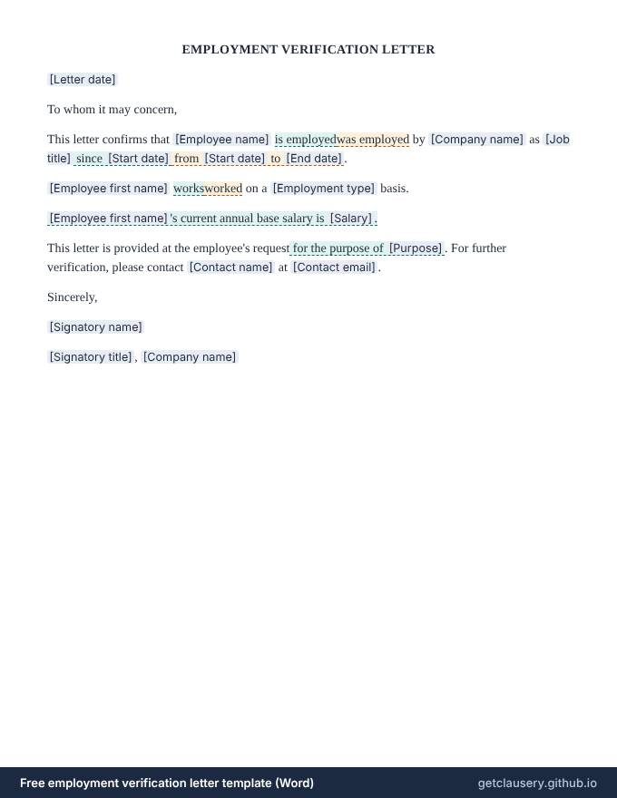

Free employment verification letter template (Word)
A letter confirming that someone works, or used to work, for your company, with their job title, dates and employment type, and optionally their salary.
Free, with unlimited documents and no sign-up. Your answers stay in your browser. Who it is for: HR and office managers answering requests from landlords, lenders and visa applications.
Updated · Word (.docx) · Free to use and adapt
Need more than one? Download all 87 templates as one .zip file.
What is in the employment verification letter
- Current or former employee wording
- Job title and dates
- Full-time, part-time or other employment type
- Optional salary line
- Optional purpose of the letter
- Contact for further verification
- Signature

Read the full template
This is the complete wording. [Labels] are filled in from your answers, and highlighted text only appears when it applies; hover over it to see when.
EMPLOYMENT VERIFICATION LETTER
[Letter date]
To whom it may concern,
This letter confirms that [Employee name] is employedwas employed by [Company name] as [Job title] since [Start date] from [Start date] to [End date].
[Employee first name] worksworked on a [Employment type] basis.
[Employee first name]'s current annual base salary is [Salary].
This letter is provided at the employee's request for the purpose of [Purpose]. For further verification, please contact [Contact name] at [Contact email].
Sincerely,
[Signatory name]
[Signatory title], [Company name]
The questions you answer
Clausery turns the template into a short questionnaire. Optional parts only appear when they apply.
| Question | Type | Asked when |
|---|---|---|
| Letter date | Date | Always |
| Employee name | Short text | Always |
| Is current | Yes / no | Always |
| Company name | Short text | Always |
| Job title | Short text | Always |
| Start date | Date | Always |
| End date | Date | If “Is current” is no |
| Employee first name | Short text | Always |
| Employment type | Short text | Always |
| Include salary | Yes / no | Always |
| Salary | Money | If “Include salary” is yes |
| Has purpose | Yes / no | Always |
| Purpose | Long text | If “Has purpose” is yes |
| Contact name | Short text | Always |
| Contact email | Always | |
| Signatory name | Short text | Always |
| Signatory title | Short text | Always |
Prefer to start from your own wording? Download the Word file, edit it, keep the {tags}, and upload it to Clausery. See the template syntax.
Questions
Should I include salary?
Only with the employee's consent and where local law allows it. The salary line is optional.
Does it work for former employees?
Yes. One question switches the wording to past tense and asks for an end date.
Guide: How to write a reference letter (with examples)
Related templates
Browse all 87 free templates by category
This template is a general sample and not legal advice. Laws vary by jurisdiction; have it reviewed before use.